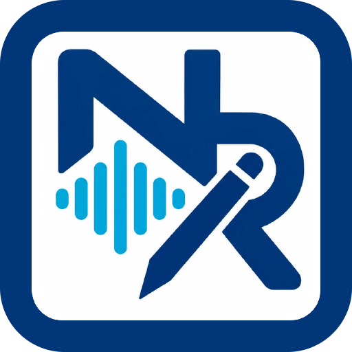

NoteRecord · Ana sayfa · Home (English)NoteRecord Gizlilik Politikası
Yürürlük tarihi: 5 Kasım 2026 (son güncelleme: 26 Kasım 2026)
Bu politika, Android için geliştirilen NoteRecord uygulamasının (“Uygulama”) hangi bilgileri nasıl kullandığını açıklar. Uygulama Ibrahim Oktay (“geliştirici”) tarafından yayınlanmaktadır.
Kısaca
- Hesap oluşturmanız gerekmez; adınızı, e-postanızı veya telefon numaranızı istemeyiz.
- Notlarınız, listeleriniz ve ayarlarınız telefonunuzda saklanır (Android’in Google yedeği açıksa Google hesabınıza şifreli yedeklenebilir; bölüm 3). Geliştiricinin bir sunucusu yoktur ve bu verilere erişemez.
- Ses kayıtlarınız Uygulama tarafından saklanmaz.
- Uygulama ücretsizdir; yalnız sizin istediğinizde, kullanım hakkı kazanmanız için isteğe bağlı ödüllü Google AdMob reklamları gösterir, ekrana kendiliğinden reklam çıkmaz; reklam hizmeti cihazınıza ait bazı bilgileri toplayabilir (bölüm 9).
- Sesle arama için rehberiniz yalnızca telefonda okunur; hiçbir yere gönderilmez (bölüm 14).
- Konum yalnızca acil durum ekranında kullanılır; kendiliğinden hiçbir yere gönderilmez (bölüm 15).
1. Mikrofon ve ses tanıma
Mikrofon izni yalnızca siz mikrofon düğmesine bastığınızda, söylediklerinizi yazıya çevirmek için kullanılır; dinleme siz durdurana kadar sürer. Yazıya çevirme telefonunuzun ses tanıma hizmeti (genellikle Google’ın) tarafından yapılır; bu hizmet sesi Google sunucularına gönderebilir veya çevrimdışı dil paketi yüklüyse telefonda işleyebilir ve Google’ın gizlilik politikasına tabidir. Telefonun ses tanıma hizmeti dili desteklemiyorsa Uygulama, Google uygulamasının sesli giriş penceresini açar; ses bu durumda da Google uygulaması tarafından işlenir. NoteRecord ses dosyası oluşturmaz, saklamaz veya göndermez; yalnızca ortaya çıkan metni kullanır. Mikrofonu ilk kullanmadan önce (ve acil durum özelliğini ilk açtığınızda) Uygulama, bir kereye mahsus bir bilgi penceresiyle bunu size açıklar: söyledikleriniz telefonun konuşma tanıma hizmetiyle (Google) yazıya çevrilir, bu hizmet sesi internet üzerinden işleyebilir ve NoteRecord ses kaydı saklamaz. Mikrofon yalnız uygulama ekrandayken kullanılır; uygulamadan çıkınca dinleme durur ve mikrofon bırakılır. Uygulama arka planda mikrofon kullanmaz.
Toplantı odası modunda mikrofon sesi yalnız telefonun belleğinde yükseltilir ve telefonun ses tanıma hizmetine verilir (bu hizmet, normal dinlemede olduğu gibi, sesi internet üzerinden işleyebilir); ses dosyaya yazılmaz, saklanmaz ve NoteRecord tarafından başka hiçbir yere gönderilmez.
2. Telefonda saklanan bilgiler
- Notlar, alışveriş/yapılacaklar listeleri ve çeviriler
- NoteRecord takvimindeki randevular (başlık, tarih/saat ve varsa ayrıntı metni)
- Kalan kullanım hakkı, günlük hediye hakkının alındığı tarih ve destekçi paketinin bitiş tarihi
- Uygulama dili, ses ayarları (ses, hız, perde) ve sıralama tercihi
- Kişisel kelimeler: eklediğiniz ad ve terimler (yalnız telefonda saklanır)
- “Not Uçuşu” oyunundaki en yüksek skor
Bu bilgiler geliştiriciye veya üçüncü kişilere gönderilmez. Uygulamayı kaldırdığınızda veya Android ayarlarından uygulama verilerini temizlediğinizde silinir.
3. Yedekleme ve dışa aktarma
Telefonunuzda Android’in Google yedeklemesi açıksa, Android bu bilgileri Google hesabınıza şifreli olarak yedekler ve yeni bir telefona geçtiğinizde ya da uygulamayı yeniden yüklediğinizde geri yükler; uygulama geri yüklenen notları kullanmadan önce size sorar. Bu yedekleme Google tarafından yapılır ve Google’ın gizlilik politikasına tabidir; geliştirici yedeğe erişemez. Yedeklemeyi Android ayarlarından kapatabilirsiniz. Acil durum bilgileri (yakın kişi adı ve numarası, ev adresi, acil durum özelliğinin açık/kapalı durumu) bu Google yedeğine ve telefondan telefona aktarıma dahil edilmez; notlar ve diğer ayarlar dahildir. Yeni telefonda acil durum bilgilerini yeniden girmeniz gerekir. Kişisel kelimeler (eklediğiniz ad ve terimler) Uygulamanın dışa aktarma (yedek) dosyasına girmez; Android’in Google bulut yedeği açıksa notlarınız ve ayarlarınızla birlikte bu yedeğe girebilir.
Uygulamadaki Notları dışa aktar seçeneği, notlarınızı içeren bir dosya oluşturur ve telefonunuzun paylaşım menüsünü açar; dosyanın nereye (ör. Google Drive, e-posta) gideceğini siz seçersiniz. Bu dosya, kaydettiğiniz yakın kişinin adı ve numarasını ile ev adresinizi de içerir (acil durum özelliğinin açık/kapalı ayarını içermez); dosyayı yalnız güvendiğiniz yerlere gönderin. Notları içe aktar ile seçtiğiniz dosya, yalnızca siz onayladığınızda notlarınıza eklenir. Dosyada acil durum bilgileri varsa ayrı bir pencerede gösterilir ve yalnız Kullan’a basarsanız kaydedilir; geçersiz telefon numarası alınmaz ve yedek acil durum özelliğini asla açmaz. İçe aktarılan dosya en çok 5 MB ve 10.000 not olabilir.
4. Takvim ve hatırlatma bildirimleri
Randevular NoteRecord’un kendi takviminde, yalnızca telefonunuzda saklanır. Hatırlatma gösterebilmek için Uygulama bildirim izni ister ve hatırlatmaları telefonun bildirim sistemine kurar; telefon yeniden başladığında hatırlatmaların korunması için “açılışta başlatma” iznini, hatırlatmanın tam zamanında çalması için de “alarmlar ve hatırlatıcılar” (tam zamanlı alarm) iznini kullanır. “Telefon takvimine ekle”ye bastığınızda telefonunuzun takvim uygulaması açılır ve kaydı siz onaylarsınız; başlık, tarih/saat ve ayrıntı metni bu uygulamaya aktarılır, takviminiz bir hesapla eşitleniyorsa bu bilgiler de eşitlenebilir; NoteRecord telefonunuzun takvimini okumaz ve takvim izni istemez.
5. Canlı not kayıt ve karşılıklı konuşma
Konuşma, telefonunuzun ses tanıma hizmetiyle yazıya çevrilir (bölüm 1). Karşılıklı konuşmada çeviri Google ML Kit ile telefonun içinde yapılır; çevrilen metin hiçbir sunucuya gönderilmez. Gerekli dil paketleri bir kez Google’dan indirilir. Karşılıklı konuşmada çeviriler telefonun metin okuma motoruyla sesli okunur. Başkalarının konuşmasını yazıya dökmeden önce katılımcıları bilgilendirmeniz gerekir.
6. Paylaşma ve içe aktarma
“Paylaş”a bastığınızda Uygulama yalnızca telefonunuzun paylaşım menüsünü açar; içeriğin hangi uygulamaya (ör. WhatsApp) ve kime gideceğini siz seçersiniz. Başka bir uygulamadan NoteRecord’a gönderdiğiniz ya da “Kopyalanan listeyi ekle” ile panodan aldığınız metin, yalnızca siz onayladığınızda eklenir. Uygulama panoyu kendiliğinden okumaz.
7. Sesli yanıtlar
Uygulama sonuçları sesli bildirmek için telefonunuzun metin okuma motorunu kullanır; okunan metin yalnızca bu motora iletilir.
8. Satın almalar (Destekçi paketi)
Destekçi paketleri (6 ay, 1 yıl, 2 yıl, 3 yıl) yalnızca Google Play üzerinden tek seferlik ödemeyle satın alınır ve otomatik yenilenmez. Ödeme bilgileriniz Google tarafından işlenir; NoteRecord’a ve geliştiriciye iletilmez. Uygulama Google Play’den yalnızca hangi ürünün ne zaman satın alındığını öğrenir.
9. Reklamlar (Google AdMob)
Uygulama, kullanım hakkı kazanmanız için isteğe bağlı ödüllü reklamlar gösterir. Reklamları Google LLC’nin AdMob hizmeti sunar. AdMob; reklam kimliği, IP adresi, cihaz modeli, işletim sistemi, dil, reklam etkileşimleri ve yaklaşık konum gibi bilgileri reklam göstermek, ölçmek, dolandırıcılığı önlemek ve izin verdiğiniz ölçüde kişiselleştirmek için toplayabilir. Bu veriler geliştiriciye değil Google’a iletilir. Ödüllü reklamda hak kazanılınca kısa titreşim için titreşim iznini kullanır (kişisel veri içermez). Avrupa Ekonomik Alanı ve Birleşik Krallık’ta (Google’ın zorunlu tuttuğu yerlerde) ilk açılışta Google’ın reklam izni formu gösterilir; reklamlar yalnız izin verildiyse yüklenir. Bu bölgelerde reklam izni vermezseniz reklam karşılığı hak verilmez; ancak gösterilecek reklam yoksa haklarınız bittiğinde günde bir kez 3 ücretsiz hak (günlük hediye) verilir. Bugünkü hediyeyi kullandıysanız izninizi değiştirebilir ya da tek seferlik, reklamsız Destekçi paketini alabilirsiniz. Acil durum çağrısı hiçbir zaman engellenmez. İzin durumu bilinmiyorsa (ör. ilk açılışta bağlantı yokken) uygulama önceki gibi davranır. İzninizi ⋮ → Ayarlar → Reklam gizlilik seçenekleri’nden değiştirebilirsiniz (yalnız izin gereken yerlerde görünür).
- Google’ın verileri nasıl kullandığı
- Google Gizlilik Politikası
- Kişiselleştirilmiş reklamları kapatmak veya reklam kimliğini silmek için: Android Ayarlar → Google → Reklamlar
- AdMob’un topladığı veriler (Google Play veri açıklaması): IP adresi/yaklaşık konum, uygulama etkileşimi, tanılama bilgisi ve reklam kimliği; veriler aktarım sırasında şifrelenir.
10. İnternet bağlantısı
Uygulama, reklam yüklenip yüklenemeyeceğini anlamak için google.com adresini sorgulayarak bağlantıyı kontrol eder. Bu kontrolde kişisel bilgi gönderilmez.
11. Çocuklar
NoteRecord 13 yaşın altındaki çocuklara yönelik değildir ve bilerek çocuklardan kişisel bilgi toplamaz.
12. Güvenlik
Verileriniz cihazınızda tutulduğu için güvenliği büyük ölçüde telefonunuzun ekran kilidine bağlıdır. Telefonunuza ekran kilidi koymanızı öneririz.
13. Değişiklikler
Bu politika güncellenebilir; değişiklikler bu sayfada yeni yürürlük tarihiyle yayınlanır.
14. Rehber ve sesle arama
“Ahmet’i ara” gibi bir komutla birini aramak istediğinizde Uygulama, söylediğiniz adı bulmak için telefonunuzun rehberini okur; bundan önce rehberin ne için kullanılacağını açıklar ve rehber izni ister. Bulunan kişinin adı, numarası ve varsa fotoğrafı yalnızca arama kartında gösterilir. Rehberiniz telefondan dışarı gönderilmez, Uygulamada saklanmaz ve yedeğe eklenmez. Aramayı başlatmak için Uygulama telefon arama izni ister; bu izni vermezseniz numara telefonun tuş takımında açılır ve aramayı siz başlatırsınız. Aynı izin, acil durum özelliği açıksa, acil durumda seçtiğiniz yakın kişiyi siz tuşa basmadan aramak için de kullanılır. Bu izinleri istediğiniz zaman Android ayarlarından kapatabilirsiniz.
“Rehbere ekle Ahmet 0532…” gibi bir komutla kişi eklediğinizde söylediğiniz ad ve numara yalnızca ekranda gösterilir ve telefonunuzun Kişiler uygulamasına aktarılır; kaydı orada siz yaparsınız. Uygulama rehberinize kendisi yazmaz ve bunun için ek izin istemez. Numaranın zaten kayıtlı olup olmadığına telefonda bakmak için rehber izni istenir; izin vermeseniz de kişiyi ekleyebilirsiniz. “Ahmet’e numara ekle 0533…” gibi bir komutla var olan bir kişiye numara eklediğinizde kişi rehberde telefonda bulunur ve yeni numara o kişinin Kişiler uygulamasındaki düzenleme ekranına aktarılır; kaydı yine siz yaparsınız.
15. Konum ve acil durum
Mikrofona “İmdat” ya da “Ambulans” gibi bir acil çağrı söylediğinizde Uygulama, acil ekranında konumunuzu göstermek için konum izni ister (önce ne için kullanılacağını açıklar). Konum yalnızca acil ekranı açıkken telefonun konum hizmetinden alınır; adres gösterilebilmesi için koordinatlar telefonun adres hizmetine (genellikle Google) gönderilebilir. Konum Uygulamada saklanmaz ve kendiliğinden hiçbir yere gönderilmez: yakın kişinize SMS ile göndermek isterseniz mesaj SMS uygulamanızda hazır açılır, gönder tuşuna siz basarsınız. Bulunduğunuz ülke, acil numarayı seçmek için telefonun bağlı olduğu şebekeden okunur. Android, uygulamaların acil numarayı doğrudan aramasına izin vermediği için telefonun arama ekranı numara yazılı açılır; bu aramada konumunuz, ülkenizde destekleniyorsa telefonun kendisi tarafından acil çağrı merkezine iletilebilir. Seçtiğiniz yakın kişinin adı ve numarası ile yazdığınız ev adresi yalnızca telefonunuzda saklanır; Google’ın otomatik yedeğine ve telefon aktarımına eklenmez, elle oluşturduğunuz dışa aktarma dosyasına ise eklenir (açık/kapalı ayarı eklenmez). Konum yalnızca acil durumda, uygulama ön plandayken kullanılır; arka planda konum alınmaz.
16. Diğer özellikler
- PDF’e çevir: PDF telefonunuzda oluşturulur; paylaş menüsünden nereye göndereceğinize siz karar verirsiniz.
- Ekran açık tutma: Dinlerken ekran kendiliğinden kapanmaz ve kilitlenmez, 1 dakika dokunulmazsa yalnız bu uygulamada kısılır; telefonun ekran ayarı değişmez ve bu sırada veri toplanmaz.
- Çeviri koruması ve “Temize çek”: Telefonunuzda çalışır; metin dışarı gitmez.
17. Haklarınız ve verilerin silinmesi
Uygulamada hesap yoktur. KVKK ve GDPR kapsamındaki haklarınız (bilgi alma, düzeltme, silme, itiraz) için ioktay@yahoo.com adresine yazabilirsiniz. Notlarınızı tek tek silebilirsiniz. Uygulamadaki Genel ayarlar → Tüm verileri sil notları, ayarları, kişisel kelimeleri ve acil durum bilgilerini siler; kalan kullanım hakkı ve Destekçi paketi kaydı korunur. Tüm verilerinizi, uygulamayı kaldırarak ya da Android Ayarlar → Uygulamalar → NoteRecord → Depolama → Verileri temizle yoluyla silebilirsiniz. Destekçi paketi, Google Play’den “Satın alımları geri yükle” ile geri gelir. Reklam verileri Google’da işlenir (bölüm 9); bunlar için Google’ın araçlarını kullanın.
18. İletişim
Gizlilikle ilgili sorularınız için: ioktay@yahoo.com
Web sitesi: noterecord.github.io
NoteRecord Privacy Policy
Effective date: November 5, 2026 (last updated: November 26, 2026)
This policy explains how the Android app NoteRecord (“the App”), published by Ibrahim Oktay (“the developer”), handles information.
Summary
- No account is required; we do not ask for your name, email or phone number.
- Your notes, lists and settings are stored on your phone (if Android’s Google backup is on, they may be backed up, encrypted, to your Google account; section 3). The developer has no server and cannot access this data.
- The App does not store voice recordings.
- The App is free; it shows optional rewarded Google AdMob ads only when you ask for them, to earn usage credits, and no ads appear on their own; the ad service may collect some device information (section 9).
- For calling by voice, your contacts are read only on your phone and never sent anywhere (section 14).
- Your location is used only on the emergency screen and is never sent anywhere on its own (section 15).
1. Microphone and speech recognition
Microphone access is used only when you tap the microphone button, to turn what you say into text; listening continues until you stop it. Speech-to-text is performed by your phone’s speech recognition service (usually Google’s), which may send audio to Google’s servers or process it on the device if an offline language pack is installed, and is subject to Google’s privacy policy. If the phone’s speech recognition service does not support the language, the App opens the Google app’s voice input window; the audio is then also processed by the Google app. NoteRecord does not create, keep or send audio files; it only uses the resulting text. Before you first use the microphone (and when you first turn the emergency feature on), the App explains this in a one-time notice: what you say is turned into text by your phone’s speech recognition service (Google), which may process the audio online, and NoteRecord does not store any audio. The microphone is used only while the app is on screen; when you leave the app, listening stops and the microphone is released. The App does not use the microphone in the background.
In Meeting room mode, microphone audio is amplified only in the phone’s memory and passed to the phone’s speech recognition service (which, as in normal listening, may process the audio online); it is not written to a file, not stored, and not sent anywhere else by NoteRecord.
2. Data stored on your phone
- Notes, shopping/to-do lists and translations
- Appointments in the NoteRecord calendar (title, date/time and any detail text)
- Remaining usage credits, the date of the daily gift and the supporter pack’s end date
- App language, voice settings (voice, rate, pitch) and sort preference
- Personal words: names and terms you add (kept only on your phone)
- The high score of the “Note Flight” game
This data is never sent to the developer or third parties. It is deleted when you uninstall the App or clear its data in Android settings.
3. Backup and export
If Android’s Google backup is turned on on your phone, Android backs up this data to your Google account in encrypted form and restores it when you move to a new phone or reinstall the app; the App asks you before using restored notes. This backup is performed by Google and is subject to Google’s privacy policy; the developer cannot access it. You can turn backup off in Android settings. Emergency details (close contact name and number, home address, and whether the emergency feature is on or off) are not included in this Google backup or in phone-to-phone transfer; notes and other settings are. On a new phone you need to enter the emergency details again. Personal words (names and terms you add) are not included in the App’s export (backup) file; if Android’s Google cloud backup is on, they may be included in that backup together with your notes and settings.
The App’s Export notes option creates a file containing your notes and opens your phone’s share menu; you choose where the file goes (e.g. Google Drive, email). This file also contains your saved close contact’s name and number and your home address (but not the on/off setting of the emergency feature), so send it only to places you trust. With Import notes, a file you pick is added to your notes only after you confirm. If the file contains emergency details, they are shown in a separate window and saved only if you tap Use; an invalid phone number is not imported, and a backup never turns the emergency feature on. An imported file can be at most 5 MB and 10,000 notes.
4. Calendar and reminder notifications
Appointments are stored in NoteRecord’s own calendar, only on your phone. To show reminders, the App asks for notification permission and schedules them with your phone’s notification system; it uses the “run at startup” permission so reminders survive a restart, and the “alarms & reminders” (exact alarm) permission so a reminder rings at the exact time. If you tap “Add to phone calendar”, your phone’s calendar app opens and you confirm the entry; the title, date/time and detail text are passed to that app, and may sync if your calendar syncs with an account; NoteRecord does not read your phone’s calendar and does not request calendar permission.
5. Live note-taking and two-way conversation
Speech is turned into text by your phone’s speech recognition service (section 1). In two-way conversation, translation is done on the phone with Google ML Kit; translated text is never sent to a server. The required language packs are downloaded from Google once. In conversations, translations are read aloud by your phone’s text-to-speech engine. Please inform participants before transcribing other people’s speech.
6. Sharing and importing
When you tap “Share”, the App only opens your phone’s share menu; you choose the app (e.g. WhatsApp) and the recipients. Text you send to NoteRecord from another app or take from the clipboard with “Add copied list” is added only after you confirm. The App never reads the clipboard on its own.
7. Spoken replies
The App uses your phone’s text-to-speech engine to read results aloud; the text is passed only to that engine.
8. Purchases (Supporter pack)
Supporter packs (6 months, 1, 2 or 3 years) are sold only through Google Play as one-time payments and do not renew automatically. Your payment details are processed by Google and are never passed to NoteRecord or the developer. The App only learns from Google Play which product was bought and when.
9. Advertising (Google AdMob)
The App offers optional rewarded ads to earn usage credits, served by Google LLC’s AdMob. AdMob may collect the advertising ID, IP address, device model, operating system, language, ad interactions and approximate location to serve and measure ads, prevent fraud and, where you allow it, personalise ads. This data goes to Google, not to the developer. When credits are earned in a rewarded ad, the App uses the vibration permission for a short vibration (no personal data involved). In the European Economic Area and the UK (where Google requires it), Google’s ad consent form is shown on first launch; ads are loaded only if you consent. In these regions, if you do not give ad consent, no credits are given for watching ads; however, when no ad is available and your credits run out, you receive 3 free credits once per day (the daily gift). Once today’s gift is used, you may change your choice or get the one-time, ad-free Supporter pack. Emergency calls are never blocked. If your consent status is unknown (for example, first launch while offline), the app behaves as before. You can change your choice in ⋮ → Settings → Ad privacy options (shown only where consent is required).
- How Google uses information from apps that use its services
- Google Privacy Policy
- To opt out of personalised ads or delete your advertising ID: Android Settings → Google → Ads
- Data collected by AdMob (Google Play data disclosure): IP address/approximate location, app interactions, diagnostics and advertising ID; data is encrypted in transit.
10. Internet connectivity
To know whether ads can be loaded, the App checks connectivity by looking up google.com. No personal data is sent in this check.
11. Children
NoteRecord is not directed to children under 13 and does not knowingly collect personal information from children.
12. Security
Because your data is kept on your device, its security depends largely on your phone’s screen lock. We recommend using a screen lock.
13. Changes
This policy may be updated; changes will be posted on this page with a new effective date.
14. Contacts and calling by voice
When you ask the App to call someone, for example “Call John”, it reads your phone’s contacts to find the name you said; before that, it explains what the contacts are used for and asks for the contacts permission. The name, number and photo (if any) of the contact found are shown only on the call card. Your contacts never leave your phone, are not stored by the App and are not included in backups. To place the call, the App asks for the phone call permission; if you don’t grant it, the number opens in your phone’s dialer and you start the call yourself. If the emergency feature is on, the same permission is also used to call your chosen emergency contact in an emergency without you pressing a key. You can turn these permissions off at any time in Android settings.
When you add a contact with a command such as “Add contact John 555…”, the name and number you said are only shown on screen and passed to your phone’s Contacts app, where you complete the save yourself. The App never writes to your contacts itself and asks for no extra permission for this. To check on the phone whether the number is already saved, the App asks for the contacts permission; you can add the contact even without it. When you add a number to an existing contact with a command such as “Add number 555… to John”, the contact is found on the phone and the new number is passed to that contact’s edit screen in the Contacts app; again, you complete the save yourself.
15. Location and emergencies
When you say an emergency call such as “Help” or “Ambulance” into the microphone, the App asks for location permission to show your location on the emergency screen (it first explains what the location is used for). Your location is read from the phone’s location service only while the emergency screen is open; to show an address, the coordinates may be sent to the phone’s address service (usually Google’s). The App does not store your location and never sends it anywhere on its own: if you want to send it to your emergency contact by SMS, the message opens ready in your SMS app and you tap send yourself. The country you are in is read from the mobile network to choose the emergency number. Because Android does not allow apps to call emergency numbers directly, your phone’s call screen opens with the number filled in; during that call, where supported in your country, the phone itself may send your location to the emergency service. The name and number of the contact you choose and the home address you enter are stored only on your phone; they are not included in Google’s automatic backup or phone transfer, but are included in the export file you create manually (never the on/off setting). Location is used only in an emergency, while the App is in the foreground; no location is collected in the background.
16. Other features
- Save as PDF: the PDF is created on your phone; you decide where to send it from the share menu.
- Keeping the screen on: the screen does not turn off or lock by itself while listening and dims in this app only after 1 minute without touch; your phone’s screen setting is not changed and no data is collected.
- Translation protection and “Clean up”: they run on your phone; the text does not leave it.
17. Your rights and deleting data
The App has no account. For your rights under KVKK and GDPR (access to information, correction, deletion, objection), write to ioktay@yahoo.com. You can delete notes one by one. General settings → Delete all data in the App deletes notes, settings, personal words and emergency details; the remaining credits and the Supporter pack record are kept. You can delete all your data by uninstalling the App or via Android Settings → Apps → NoteRecord → Storage → Clear data. A Supporter pack comes back from Google Play with “Restore purchases”. Advertising data is processed by Google (section 9); use Google’s tools for it.
18. Contact
For privacy questions: ioktay@yahoo.com
Website: noterecord.github.io